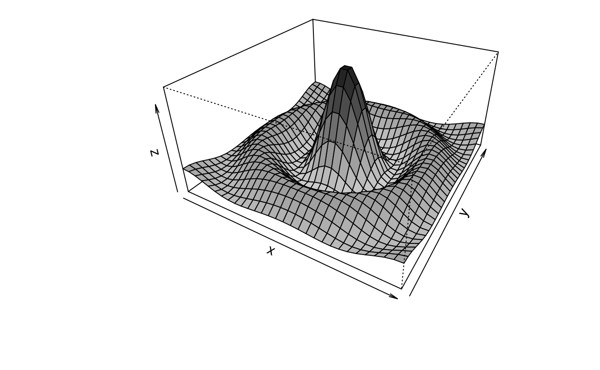
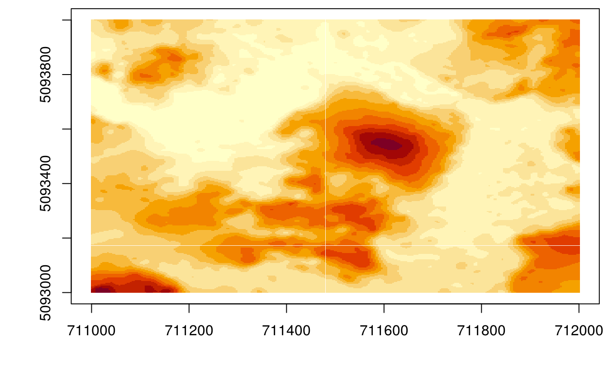
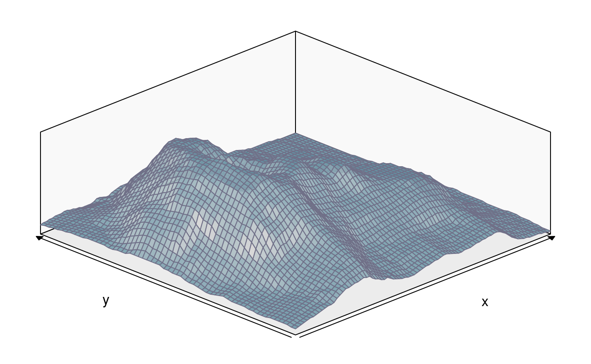
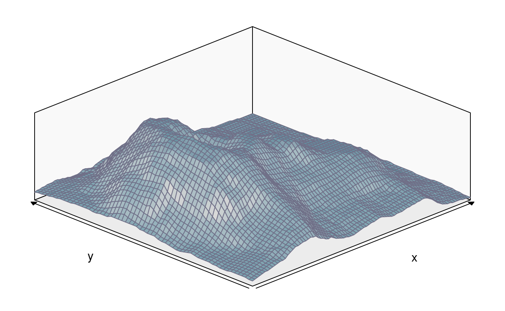

第 13 章 三维可视化
画图 graphics 使用基础 R 包和基于基础包的扩展包绘图 plotrix (???)， plotrix 饼图 pie3D scatterplot3d 三维图形 plot3D 三维图形 barsurf 三维条形图、曲面图
13.1 饼图
13.2 柱形图
13.3 散点图
13.4 函数图
13.5 透视图
x <- seq(-10, 10, length = 30)
y <- x
f <- function(x, y) {
r <- sqrt(x^2 + y^2)
10 * sin(r) / r
}
z <- outer(x, y, f)
z[is.na(z)] <- 1
op <- par(bg = "white")
nrz <- nrow(z)
ncz <- ncol(z)
jet.colors <- colorRampPalette(c("gray80", "gray10"))
nbcol <- 100
color <- jet.colors(nbcol)
zfacet <- z[-1, -1] + z[-1, -ncz] + z[-nrz, -1] + z[-nrz, -ncz]
facetcol <- cut(zfacet, nbcol)
persp(x, y, z,
theta = 30, phi = 30,
expand = 0.5, col = color[facetcol]
)

persp(x, y, z,
theta = 45, phi = 20,
expand = 0.5, col = color[facetcol],
r = 180,
ltheta = 120,
shade = 0.75,
# ticktype = "detailed", # 坐标轴上刻度数字
# box=FALSE, # 长方体框线
# nticks=6, # 刻度间隔数目
xlab = "X", ylab = "Y", zlab = "Sinc( r )"
# border=30
)
theta参数给出了主要方向，控制三维图的左右，phi给出纬度，expand 控制三维图的立体性
安装 rsm 包，添加拟合曲线，响应面曲线
x <- seq(-3, 3, by = 0.25)
y <- seq(-3, 3, by = 0.25)
d <- expand.grid(x = x, y = y)
z <- c(data = NA, 1089)
b0 <- 5.628
b1 <- 0
b2 <- 0
b3 <- -.1
b4 <- .1
b5 <- -.1
k <- 1
for (i in 1:25) {
for (j in 1:25) {
z[k] <- b0 + b1 * x[i] + b2 * y[j] + b3 * x[i] * x[i] + b4 * x[i] * y[j] + b5 * y[j] * y[j]
k <- k + 1
}
}
library(rsm)
data.lm <- lm(z ~ poly(x, y, degree = 2), data = d)
persp(data.lm, x ~ y,
zlim = c(0, max(z)),
contour = list(z = "bottom", col = "colors"), theta = -55, phi = 25
)
res1 <- persp(data.lm, x ~ y,
zlim = c(0, max(z)),
contour = list(z = "bottom", col = "colors"), theta = -55, phi = 25
)
xy <- matrix(c((-3 - 8) / 5, -3, (3 - 8) / 5, 3), ncol = 2, byrow = T)
lines(trans3d(xy[, 2], xy[, 1], 0, pmat = res1$`y ~ x`$transf), col = 3)
单个总体的最大似然估计，生成总体服从指数分布的随机数
set.seed(1234)
n <- 20 # 随机数的个数
x <- rexp(n, rate = 5)
m <- 40 # 网格数
mv <- seq(mean(x) - 1.5 * sd(x) / sqrt(n),
mean(x) + 1.5 * sd(x) / sqrt(n),
length.out = m
) # mu 均值范围
sv <- seq(0.8 * sd(x), 1.5 * sd(x), length.out = m) # 标准差的范围
z <- matrix(NA, m, m)
loglikelihood <- function(b) {
-sum(dnorm(x, b[1], b[2], log = TRUE))
}
for (i in 1:m) {
for (j in 1:m) {
z[i, j] <- -loglikelihood(c(mv[i], sv[j]))
}
}
nbcol <- 100
color <- hcl.colors(nbcol)
zfacet <- z[-1, -1] + z[-1, -m] + z[-m, -1] + z[-m, -m]
facetcol <- cut(zfacet, nbcol)
# "\n" adds one line before the label
persp(mv, sv, z,
xlab = "\n mu", ylab = "\n sigma", zlab = "\n log-likelihood",
phi = 35, theta = -30, col = color[facetcol], border = NA
)
第一个例子来自 Eric Lecoutre 的图库45，这是我见过的图形中含有巨量公式，并且用 R 实现的例子。在他的基础上我修改了颜色，设置图片尺寸，基于 persp 实现的透视图，唯一不足的是 persp 不支持表达式形式的坐标轴标签。
library(latex2exp)
# 代码来自 http://www.ejwagenmakers.com/misc/Plotting_3d_in_R.pdf
mu1 <- 0 # setting the expected value of x1
mu2 <- 0 # setting the expected value of x2
s11 <- 10 # setting the variance of x1
s12 <- 15 # setting the covariance between x1 and x2
s22 <- 10 # setting the variance of x2
rho <- 0.5 # setting the correlation coefficient between x1 and x2
x1 <- seq(-10, 10, length = 41) # generating the vector series x1
x2 <- x1 # copying x1 to x2
# setting up the function of the multivariate normal density
f <- function(x1, x2) {
term1 <- 1 / (2 * pi * sqrt(s11 * s22 * (1 - rho^2)))
term2 <- -1 / (2 * (1 - rho^2))
term3 <- (x1 - mu1)^2 / s11
term4 <- (x2 - mu2)^2 / s22
term5 <- -2 * rho * ((x1 - mu1) * (x2 - mu2)) / (sqrt(s11) * sqrt(s22))
term1 * exp(term2 * (term3 + term4 - term5))
}
z <- outer(x1, x2, f) # calculating the density values
nrz <- nrow(z)
ncz <- ncol(z)
nbcol <- 100
color <- hcl.colors(100)
# Compute the z-value at the facet centres
zfacet <- z[-1, -1] + z[-1, -ncz] + z[-nrz, -1] + z[-nrz, -ncz]
# Recode facet z-values into color indices
facetcol <- cut(zfacet, nbcol)
par(mar = c(4.1, 4.1, 4.5, 1.5), ps = 10)
persp(x1, x2, z,
xlab = "\n x1",
ylab = "\n x2",
zlab = "\n\n f(x1,x2)",
# xlab = TeX('$x_{1}$'), # latex2exp 其实是使用 LaTeX 语法将 LaTeX 公式翻译为 R 能接受的表达式形式
# ylab = TeX('$x_{2}$'),
# zlab = TeX('$f(x_{1},x_{2})$'),
main = "Two dimensional Normal Distribution",
col = color[facetcol], border = NA, theta = 30, phi = 20,
r = 50, d = 0.1, expand = 0.5, ltheta = 90, lphi = 180,
shade = 0.1, ticktype = "detailed", nticks = 5, box = TRUE
)
mtext(expression(list(
mu[1] == 0, mu[2] == 0, sigma[11] == 10,
sigma[22] == 10, sigma[12] == 15, rho == 0.5
)),
side = 3
)
mtext(expression(italic(f) ~ group("(", list(x[1], x[2]), ")") == frac(1, 2 ~ pi ~ sqrt(sigma[11] ~ sigma[22] ~ (1 - rho^2))) ~ exp ~
bgroup(
"{",
paste(
-frac(1, 2(1 - rho^2)) * phantom(0),
bgroup(
"[",
frac((x[1] ~ -~ mu[1])^2, sigma[11]) ~
-~2 ~ rho ~ frac(x[1] ~ -~ mu[1], sqrt(sigma[11])) ~ frac(x[2] ~ -~ mu[2], sqrt(sigma[22])) ~
+~ frac((x[2] ~ -~ mu[2])^2, sigma[22]),
"]"
)
),
"}"
)), side = 1, line = 3)图 13.1: 二元正态概率密度函数
早在 2006 年的时候，Paul Murrell 就提出来一种解决方法46，可是比较复杂，后来谢大大接手了 tikzDevice 包的开发，算是比较好的解决了这个问题，目前该 R 包由 Ralf Stubner 接手维护。
# 代码来自 http://www.ejwagenmakers.com/misc/Plotting_3d_in_R.pdf
mu1 <- 0 # setting the expected value of x1
mu2 <- 0 # setting the expected value of x2
s11 <- 10 # setting the variance of x1
s12 <- 15 # setting the covariance between x1 and x2
s22 <- 10 # setting the variance of x2
rho <- 0.5 # setting the correlation coefficient between x1 and x2
x1 <- seq(-10, 10, length = 41) # generating the vector series x1
x2 <- x1 # copying x1 to x2
f <- function(x1, x2) {
term1 <- 1 / (2 * pi * sqrt(s11 * s22 * (1 - rho^2)))
term2 <- -1 / (2 * (1 - rho^2))
term3 <- (x1 - mu1)^2 / s11
term4 <- (x2 - mu2)^2 / s22
term5 <- -2 * rho * ((x1 - mu1) * (x2 - mu2)) / (sqrt(s11) * sqrt(s22))
term1 * exp(term2 * (term3 + term4 - term5))
} # setting up the function of the multivariate normal density
z <- outer(x1, x2, f) # calculating the density values
nrz <- nrow(z)
ncz <- ncol(z)
nbcol <- 100
color <- hcl.colors(100)
# Compute the z-value at the facet centres
zfacet <- z[-1, -1] + z[-1, -ncz] + z[-nrz, -1] + z[-nrz, -ncz]
# Recode facet z-values into color indices
facetcol <- cut(zfacet, nbcol)
par(mar = c(4.1, 4.1, 4.5, 1.5))
persp(x1, x2, z,
xlab = "$x_{1}$",
ylab = "$x_{2}$",
zlab = "$f(x_{1},x_{2})$",
main = "Two dimensional Normal Distribution",
col = color[facetcol], border = NA, theta = 30, phi = 20,
r = 50, d = 0.1, expand = 0.5, ltheta = 90, lphi = 180,
shade = 0.1, ticktype = "detailed", nticks = 5, box = TRUE
)
mtext("$\\mu_1 = 0,\\mu_2 = 0,\\sigma_{11} = 10,\\sigma_{22} = 10,\\sigma_{12} = 15, \\rho = 0.5$", side = 3)
mtext("$f(x_{1},x_{2}) = \\frac{1}{2\\pi\\sqrt{\\sigma_{11}\\sigma_{22}(1-\\rho^2)}}\\exp\\big\\{-\\frac{1}{2(1-\\rho^2)}[\\frac{(x_1 - \\mu_1)^2}{\\sigma_{11}} - 2\\rho\\frac{(x_1 - \\mu_1)(x_2 - \\mu_2)}{\\sqrt{\\sigma_{11}}\\sqrt{\\sigma_{22}}} + \\frac{(x_2 - \\mu_2)^2}{\\sigma_{22}}]\\big\\}$",
side = 1, line = 2, cex = 1.5
)图 13.2: 二元正态密度函数
library(lattice)
wireframe(z ~ x1 + x2,
data = data.frame(x1 = x1, x2 = rep(x2, each = length(x1)), z = z),
xlab = expression(x[1]), ylab = expression(x[2]),
zlab = expression(italic(f) ~ group("(", list(x[1], x[2]), ")")),
colorkey = TRUE, drape = TRUE
)
图 13.3: 表达式二元密度函数
## volcano ## 87 x 61 matrix
wireframe(volcano,
shade = TRUE,
aspect = c(61 / 87, 0.4),
light.source = c(10, 0, 10)
)
希腊字母用 unicode 字符代替，不要使用 pdf 不然数学符号 \(\sigma\) 不能正确渲染，推荐选择 cairo_pdf
# https://stackoverflow.com/questions/41190525/adjust-margins-in-persp-persp3d-in-r
# https://stackoverflow.com/questions/37571376/how-to-customize-nticks-in-persp-r
# https://stackoverflow.com/questions/43507680/are-xlab-ylab-and-zlab-in-persp-incompatible-with-bquote
x <- seq(-10, 10, len = 30)
y <- seq(0, 5, len = 30)
f <- function(x, y) {
dnorm(2, x, y)
}
z <- outer(x, y, f)
persp(x, y, z,
theta = 30, phi = 30, expand = 0.5, col = "lightblue",
xlab = "\u03bc", ylab = "\u03c3\u207F",
zlab = paste("Likelihood ", "(\u03bc,\u03c3\u207F)", sep = "")
)
图 13.4: unicode 字符代替希腊字母
透视图案例，插值 LIDAR 数据集包含 10123 组观测值，每组观测包含经度、维度和海拔三个分量, mba.surf 使用多水平 B-样条近似曲面
library(MBA)
data(LIDAR) # 一小部分光探测和测距雷达数据，美国威斯康辛州森林景观
mba.int <- mba.surf(LIDAR, 300, 300, extend = TRUE)$xyz.est
image(mba.int, xaxs = "r", yaxs = "r")
# 透视图
persp(mba.int,
theta = 90, phi = 20, col = "green3", scale = FALSE,
ltheta = -120, shade = 0.75, expand = 10, border = NA, box = FALSE
)
z <- mba.int$z
nrz <- nrow(z)
ncz <- ncol(z)
nbcol <- 100
color <- hcl.colors(nbcol)
# Compute the z-value at the facet centres
zfacet <- z[-1, -1] + z[-1, -ncz] + z[-nrz, -1] + z[-nrz, -ncz]
# z 分量用颜色表示
facetcol <- cut(zfacet, nbcol)
# png(file="mba.png",res=300,width = 680,height = 680)
par(mar = rep(0, 4))
## 透视图
persp(mba.int,
theta = 90, phi = 20, col = color[facetcol], scale = FALSE,
ltheta = -120, shade = 0.75, expand = 20, border = NA, box = FALSE
)
# 热图
image(mba.int, xaxs = "r", yaxs = "r", col = gray(seq(1, 0, l = 101)))

 

13.6 TikZ 绘图
用 Base R 绘制带有复杂数学公式的图形，tikzDevice 包结合 R Markdown 的使用，引入 LaTeX 绘图引擎 TikZ 主要是借助 LaTeX 对数学符号的强大支持，让R 语言绘制的图形上出现优美的复杂的数学符号表达式
以 tikzDevice 绘图， out.width='35%' 设置一幅子图占页面的宽度，在 _common.R 设置页面宽度为 out.width='70%'，即全宽图占页面 70% 的宽度。 fig.asp=1 设置子图的长宽比例为 1:1，即正方形。设置图片的宽度，默认是 fig.width = 6 相应地，图片的高度是 fig.height = fig.width * fig.asp = 6 * 0.618 = 3.708 但是这个比例使得图片上的字很小，所以设置fig.width=2.5。设置图形设备 dev='tikz'，此时会自动调用 tikzDevice 包处理图上的数学公式，tikzDevice 包将 LaTeX 中的 TikZ 绘图引擎引入到基础 R 绘图中，由于该引擎将R代码块转化为 .tex 文件，接着调用 LaTeX 编译，默认生成 PDF 格式图片，因此设置 tikz2png='-density 300' 调用 ImageMgick 的 convert 命令将 PDF 格式图片转化为 PNG 格式图片，转化前需要用 Ghostscript 读取该 PDF 文件，转化成功后，需要将该 PNG 格式文件路径返回，以插入到文档中。bessel-function 是给该图片的命名，这段代码生成两张图片，两个图片就分别叫做 bessel-function-1.pdf 和 bessel-function-2.pdf。在 LaTeX 里并排插入两个图片，需要在导言区加载 subfig 宏包。
knitr 提供 Tikz 图形的模版， system.file('misc', 'tikz2pdf.tex', package = 'knitr')，tikzDevice 包可以方便的把 R 代码转化为 tikz 代码，然后使用 LaTeX 引擎编译成 PDF 文档，特别地，它很好地支持了图里的数学公式
library(tikzDevice)
tf <- file.path(getwd(), "demo-tikzDevice.tex")
tikz(tf, width = 6, height = 4, pointsize = 30, standAlone = TRUE)
# 绘图的代码，仅支持 Base R Graphics System
source(file = "code/chapter_03/matern.R")
dev.off()
tools::texi2dvi(tf, pdf = T)
system("rm demo-tikzDevice.tex *.log *.aux *.dvi")
system("convert -density 300 -trim demo-tikzDevice.pdf -quality 100 demo-tikzDevice.png")
system("mv demo-tikzDevice.* figures/")
# convert test.svg test.png两个利用 tikzDevice 包的例子
# 带有图标题
x <- rnorm(10)
y <- x + rnorm(5, sd = 0.25)
model <- lm(y ~ x)
rsq <- summary(model)$r.squared
rsq <- signif(rsq, 4)
plot(x, y, main = "Hello \\LaTeX!", xlab = "$x$", ylab = "$y$")
abline(model, col = "red")
mtext(paste("Linear model: $R^{2}=", rsq, "$"), line = 0.5)
legend("bottomright", legend = paste("$y = ", round(coef(model)[2], 3),
"x +", round(coef(model)[1], 3), "$",
sep = ""
), bty = "n")
plot(x, y, main = "Hello \\LaTeX!", xlab = "$x$", ylab = "$y$")
abline(model, col = "red")
mtext(paste("Linear model: $R^{2}=", rsq, "$"), line = 0.5)
legend("bottomright", legend = paste("$y = ", round(coef(model)[2], 3),
"x +", round(coef(model)[1], 3), "$",
sep = ""
), bty = "n")
图 13.5: 线性回归模型
x0 <- 2^(-20:10)
nus <- c(0:5, 10, 20)
x <- seq(0, 4, length.out = 501)
plot(x0, x0^-8,
frame.plot = TRUE, # 添加绘图框
log = "xy", # x 和 y 轴都取对数尺度
axes = FALSE, # 去掉坐标轴
xlab = "$u$", ylab = "$\\mathcal{K}_{\\kappa}(u)$", # 设置坐标轴标签
type = "n", # 清除绘图区域的内容
ann = TRUE, # 添加标题 x和y轴标签
panel.first = grid() # 添加背景参考线
)
axis(1,
at = 10^seq(from = -8, to = 2, by = 2),
labels = paste0("$\\mathsf{10^{", seq(from = -8, to = 2, by = 2), "}}$")
)
axis(2,
at = 10^seq(from = -8, to = 56, by = 16),
labels = paste0("$\\mathsf{10^{", seq(from = -8, to = 56, by = 16), "}}$"), las = 1
)
for (i in seq(length(nus))) {
lines(x0, besselK(x0, nu = nus[i]), col = hcl.colors(9)[i], lwd = 2)
}
legend("topright",
legend = paste0("$\\kappa=", rev(nus), "$"),
col = hcl.colors(9, rev = T), lwd = 2, cex = 1
)
x <- seq(0, 4, length.out = 501)
x <- x[x > 0]
plot(x, x,
frame.plot = TRUE,
ylim = c(1e+0, 1e+20), log = "y",
xlab = "$u$", type = "n", yaxt = "n",
ylab = "$\\mathcal{K}_{\\kappa}(u)$", ann = TRUE, panel.first = grid()
)
axis(2,
at = c(1e+0, 1e+05, 1e+10, 1e+15, 1e+20),
labels = paste0("$\\mathsf{10^{", seq(from = 0, to = 20, by = 5), "}}$"), las = 1
)
for (i in seq(length(nus))) {
lines(x, besselK(x, nu = nus[i]), col = hcl.colors(9)[i], lwd = 2)
}
legend("topright",
legend = paste0("$\\kappa=", rev(nus), "$"),
col = hcl.colors(9, rev = T), lwd = 2, cex = 1
)
图 13.6: 贝塞尔函数
\usetikzlibrary{arrows}
\begin{tikzpicture}[node distance=2cm, auto,>=latex', thick, scale = 0.5]
\node (P) {$P$};
\node (B) [right of=P] {$B$};
\node (A) [below of=P] {$A$};
\node (C) [below of=B] {$C$};
\node (P1) [node distance=1.4cm, left of=P, above of=P] {$\hat{P}$};
\draw[->] (P) to node {$f$} (B);
\draw[->] (P) to node [swap] {$g$} (A);
\draw[->] (A) to node [swap] {$f$} (C);
\draw[->] (B) to node {$g$} (C);
\draw[->, bend right] (P1) to node [swap] {$\hat{g}$} (A);
\draw[->, bend left] (P1) to node {$\hat{f}$} (B);
\draw[->, dashed] (P1) to node {$k$} (P);
\end{tikzpicture}\begin{tikzpicture}
\begin{scope}[blend group = soft light]
\fill[red!30!white] ( 90:1.2) circle (2);
\fill[green!30!white] (210:1.2) circle (2);
\fill[blue!30!white] (330:1.2) circle (2);
\end{scope}
\node at ( 90:2) {Typography};
\node at ( 210:2) {Design};
\node at ( 330:2) {Coding};
\node [font=\Large] {\LaTeX};
\end{tikzpicture}
图 13.7: Venn 图
13.7 图形导出
图形导出的格式主要看面向的呈现方式，如插入 HTML 网页中，可选 png， svg， rgl 和 gif 格式，插入 LaTeX 文档中，可选 eps，ps，pdf 和 png 等格式
保存绘制的图形，R 使用的图形渲染库的版本
grSoftVersion()
#> cairo libpng jpeg
#> "1.14.6" "1.2.54" "8.0"
#> libtiff
#> "LIBTIFF, Version 4.0.6"当前 R 环境中支持的图形设备
capabilities()
#> jpeg png tiff tcltk X11 aqua
#> TRUE TRUE TRUE TRUE TRUE FALSE
#> http/ftp sockets libxml fifo cledit iconv
#> TRUE TRUE TRUE TRUE FALSE TRUE
#> NLS profmem cairo ICU long.double libcurl
#> TRUE TRUE TRUE TRUE TRUE TRUE| 设备 | 函数 |
|---|---|
| windows | cairo_pdf, cairo_ps |
| svg | |
| postscript | png |
| xfig | jpeg |
| bitmap | bmp |
| pictex | tiff |
图形设备控制函数
apropos("dev.")
#> [1] ".Device" ".Devices" "dev.capabilities"
#> [4] "dev.capture" "dev.control" "dev.copy"
#> [7] "dev.copy2eps" "dev.copy2pdf" "dev.cur"
#> [10] "dev.flush" "dev.hold" "dev.interactive"
#> [13] "dev.list" "dev.new" "dev.next"
#> [16] "dev.off" "dev.prev" "dev.print"
#> [19] "dev.set" "dev.size" "dev2bitmap"
#> [22] "devAskNewPage" "deviance" "deviceIsInteractive"
#> [25] "trellis.device"导入导出 SVG 格式矢量图形
The Butterfly Affectation: A case study in embedding an external image in an R plot
13.8 软件信息
sessionInfo()
#> R Under development (unstable) (2020-03-10 r77920)
#> Platform: x86_64-pc-linux-gnu (64-bit)
#> Running under: Ubuntu 16.04.6 LTS
#>
#> Matrix products: default
#> BLAS: /home/travis/R-bin/lib/R/lib/libRblas.so
#> LAPACK: /home/travis/R-bin/lib/R/lib/libRlapack.so
#>
#> locale:
#> [1] LC_CTYPE=en_US.UTF-8 LC_NUMERIC=C
#> [3] LC_TIME=en_US.UTF-8 LC_COLLATE=C
#> [5] LC_MONETARY=en_US.UTF-8 LC_MESSAGES=en_US.UTF-8
#> [7] LC_PAPER=en_US.UTF-8 LC_NAME=C
#> [9] LC_ADDRESS=C LC_TELEPHONE=C
#> [11] LC_MEASUREMENT=en_US.UTF-8 LC_IDENTIFICATION=C
#>
#> attached base packages:
#> [1] stats graphics grDevices utils datasets methods base
#>
#> other attached packages:
#> [1] lattice_0.20-40 latex2exp_0.4.0 rsm_2.10
#> [4] MBA_0.0-9 plot3D_1.3 scatterplot3d_0.3-41
#> [7] plotrix_3.7-7 barsurf_0.4.0
#>
#> loaded via a namespace (and not attached):
#> [1] Rcpp_1.0.3 knitr_1.28.2 magrittr_1.5 misc3d_0.8-4
#> [5] colorspace_1.4-1 rlang_0.4.5 filehash_2.4-2 stringr_1.4.0
#> [9] highr_0.8 pdftools_2.3 tools_4.0.0 grid_4.0.0
#> [13] tikzDevice_0.12.3 xfun_0.12 tinytex_0.20 askpass_1.1
#> [17] htmltools_0.4.0 kubik_0.1.2 yaml_2.2.1 digest_0.6.25
#> [21] qpdf_1.1 bookdown_0.18 intoo_0.4.0 curl_4.3
#> [25] evaluate_0.14 rmarkdown_2.1 stringi_1.4.6 compiler_4.0.0
#> [29] magick_2.3